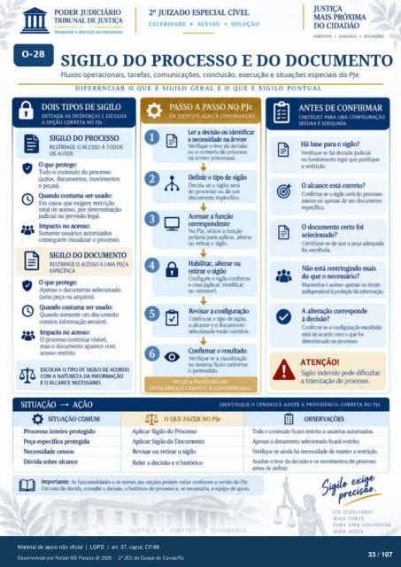

Transcrição automática em português, ainda não revisada. Confira grafia, prazos e termos jurídicos na imagem e no PDF antes de utilizar.
TRASALHO A SERVIÇO DA CIDADANIA
CELERIDADE • ACESSO • SOLUÇÃO
DIREITOS • DIÁLOGO • SOLUÇÕES
SIGILO DO PROCESSO E DO DOCUMENTO
Fluxos operacionais. tarefas, comunicações. conclusão, execução e situações especiais do PJe.
DIFERENCIAR O QUE E SIGILO GERAL E O QUE E SIGILO PONTUAL
DOIS TIPOS DE SIGILO
ENTENDA AS DIFERENÇAS E ESCOLHA
A OPÇÃO CORRETA NO PJe
SIGILO PROCESSO
RESTRINGE O ACESSO A TOtns
OS AUTOS
O que protege: Tcxio 0 conteúdo do prcx•eso
(aut(F, nywimentos e Fças).
Quando costuma ser usado: Em casos que exigem restrição
total de acesso, IX)r determinação judicial ou vxevisào legal.
Impacto no acesso: usuários
conseguem visualizar o prcresso.
SIGILO DO DCAJMENTO
RESTRINGE O ACESSO A UMA PEÇA
ESPECIFICA
O que protege: e
Armas o dcxurnento selecionado (uma Fça ou arquivo).
Quando ccstuma ser usado: Quando somente um
cmtém informação Impacto no acesso:
O prcxesso continua visível, mas o dcrumento aparece com
acesso restrito.
ESCOLHA O DE SIGILO DE ACORIX)
COM A NATUREZA DA INFORMAÇÃO
E O ALCANCE NECESSÁRIO.
SITUAÇÃO AÇÃO
Processo inteiro protegido Peça eqrcifica protegida
Necessidade Dúvida sobre alcance
PASSO A PASSO NO PJe
e
DA IDENTIFICACÀO À CONFIRMAÇÃO
ler a ickntificar a na árvore
Verifique 0 teor da decisão ou o contexto do pr«esso
na árwre prcxessual. tkfinir o tip de sigilo
[kcida se 0 sigilo será do prcxesso ou de um
dcxumento eslxcifico. Acessar a função
No PJe. utilize a funçào própria para aplicar, alterar
ou retirar o sigilo. Habilitar, alterar ou
retirar o sigilo Configure o Sigilo confcxrne
o ca*) (aviicar. mcxiificar ou renuwer).
Revisar a configuração Confira o tip de Sigilo.
o alcance e o dcxurnento selecionado CCTretcS.
Confirmar o resultado Verifique se a visualização
no sistema CMIforrne o pretendido.
PASSO A PASSO SEGURO
EVITA ERROS E GARANTE A CONFORMIDADE
ANTES DE CONFIRMAR
CHECKUST PARA UMA CONFIGURAÇÃO
SEGURA E ADEQUADA
Há para o sigilo? Verifique há decisào judicial
Ou fundarnento legal que justifique a restriç..n
O alcance está correto? Confirme o sigilo será
inteiro CRI almas um O dcxumento certo foi
selecionado? Certifiqtp-se que a
foi escolhida Não está restringindo mais
que o necessário? Mantenha o X•esg) limite
illii%rrsivel à A alteração correspnde
à decisão? Confirme a configurkü)
está iK•ord:) crxn o qtr foi no
ATENÇÃO!
Sigilo indevido rxxle dificultar a tramitação do processo.
IDENTIFIQUE O CENÁRIO E ADOTE A PROVIDENCIA CORRETA NO PJe
OQUE FAZER NO PJe
Aplicar Sigilo do Prcresso Aplicar Sigilo do
Revisar ou retirar o sigilo Reler a e 0 hist&ico
Imr»rtMite•. As funcionalid"s e das lx:xietn variar conforme a versão do PJe. Em dúvida. consulte a (kisüy. o histórico do prrx•esso e. se necessário. a equiF de amio
OBSERVAÇÕES
o ccnteúcb ficará restrito a autMizak•s Arrnas o dcxunrnto ficará restrita
Verifique se ainda há necessiduie manter a restriçü). o da e os
antes de definir.
UM JUDICIÁRIO
MAIS FORTE
PARA UMA SOCIEDADE
Ver também o infográfico original (página 33)
